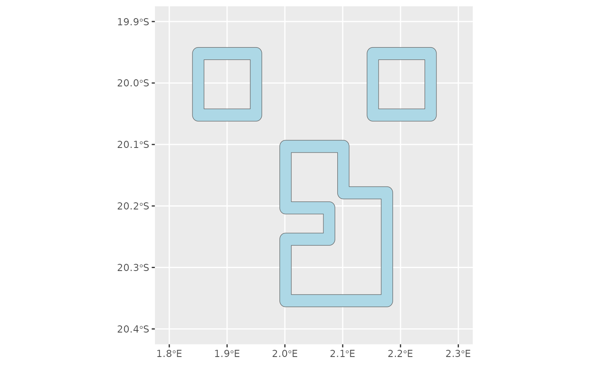

Generate simulated reefs
generate_reefs.RdGenerate simulated reefs
Arguments
- simulated_patch_sf
A simulated patch as an sf object as generated by the function
generate_patch- config_sp
A list that contains the parameters for filtering the field to patches. The list should contain the following parameters:
reef_width: a numeric representing the half the width of a ribbon representing the reef that is centered on the outline of the patch
Value
a list containing:
simulated_reefs_sf: a sfc multipolygon object that represents the simulated reefs
simulated_reefs_poly_sf: an sf object that represents the simulated reefs
Details
Generate simulated reefs from a simulated patches. A "reef" is a special type of patch that is created by buffering the outline of a patch to create a ribbon that is centered on the outline of the patch. The width of the ribbon is determined by the parameter reef_width. In this way, the resultin object more closely resembles a coral reef which tends to be an irregular ring or semi-ring shaped polygon with the coral growing mostly around the outside edge surrounding a central sandy lagoon.
Examples
library(sf)
library(gstat)
library(ggplot2)
config_sp <- list(
seed = 1,
crs = 4326,
model = "Exp",
psill = 1,
range = 15,
nugget = 0,
patch_threshold = 1.75,
reef_width = 0.01
)
spatial_domain <- st_geometry(
st_multipoint(
x = rbind(
c(0, -10),
c(3, -10),
c(10, -20),
c(1, -21),
c(2, -16),
c(0, -10)
)
)
) |>
st_set_crs(config_sp$crs) |>
st_cast("POLYGON")
set.seed(config_sp$seed)
spatial_grid <- spatial_domain |>
st_set_crs(NA) |>
st_sample(size = 10000, type = "regular") |>
st_set_crs(config_sp$crs)
simulated_field <- generate_field(spatial_grid, config_sp)
#> [using unconditional Gaussian simulation]
simulated_patches <- generate_patches(simulated_field, config_sp)
#> Spherical geometry (s2) switched off
#> Spherical geometry (s2) switched on
simulated_reefs <- generate_reefs(simulated_patches, config_sp)
#> Spherical geometry (s2) switched off
#> Spherical geometry (s2) switched on
ggplot() +
geom_sf(data = simulated_reefs$simulated_reefs_sf, fill = "lightblue") +
coord_sf(xlim = c(1.8, 2.3), ylim = c(-20.4, -19.9))
